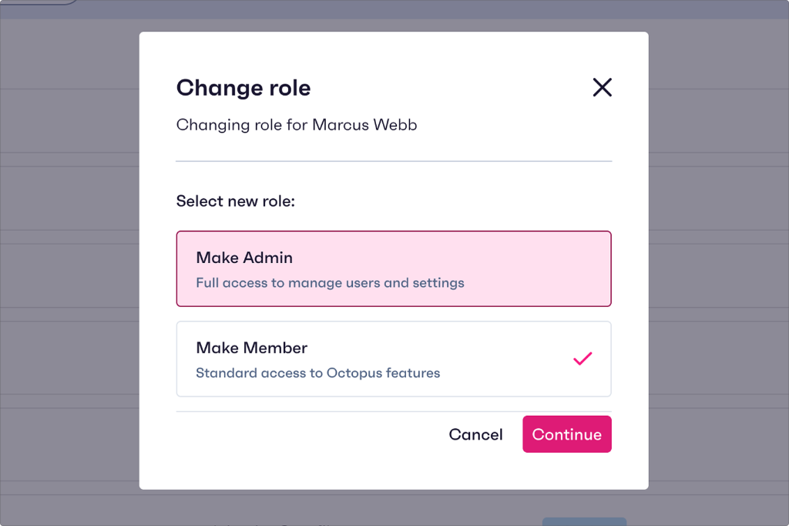
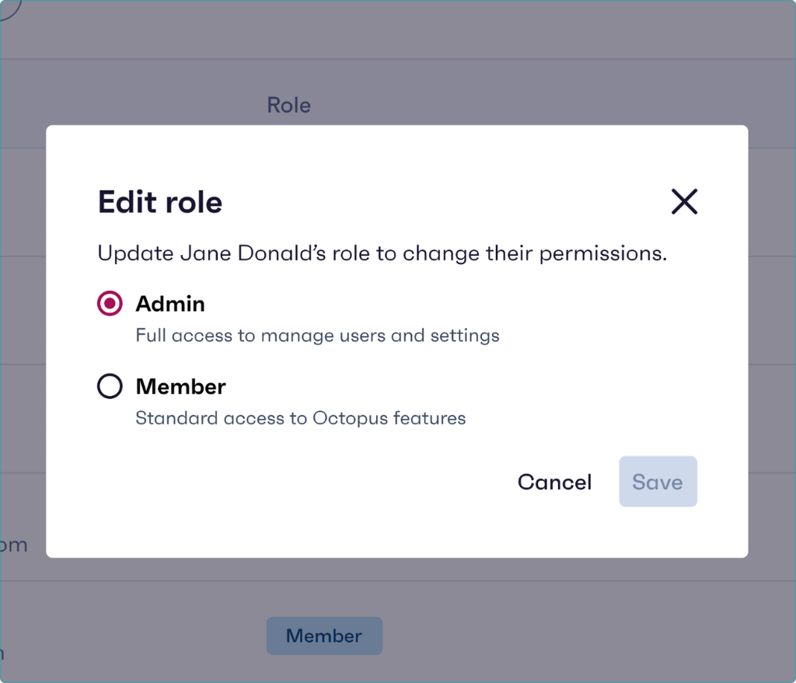
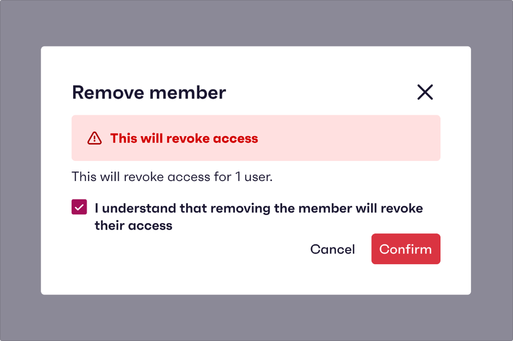
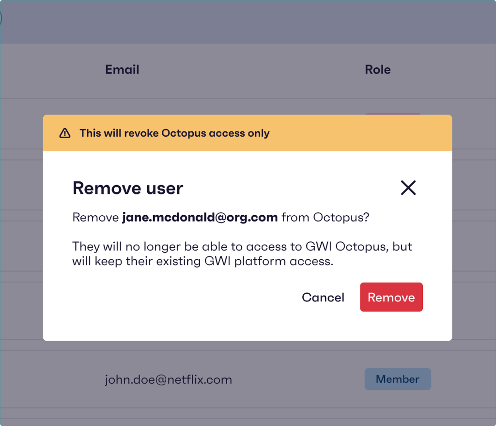
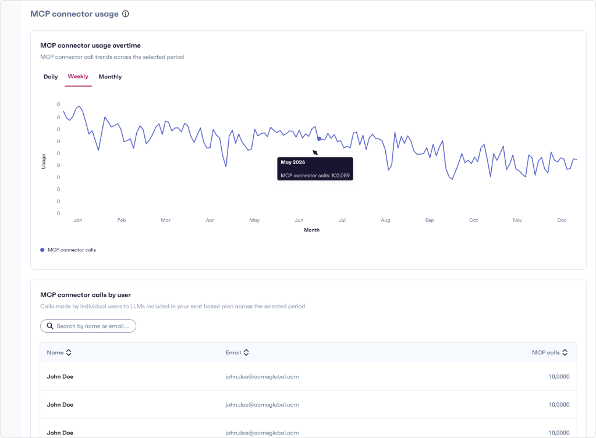
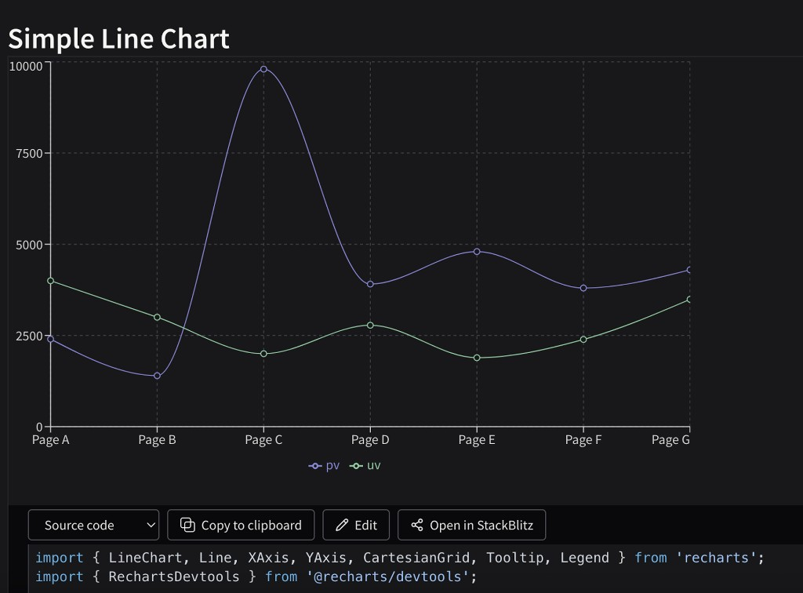
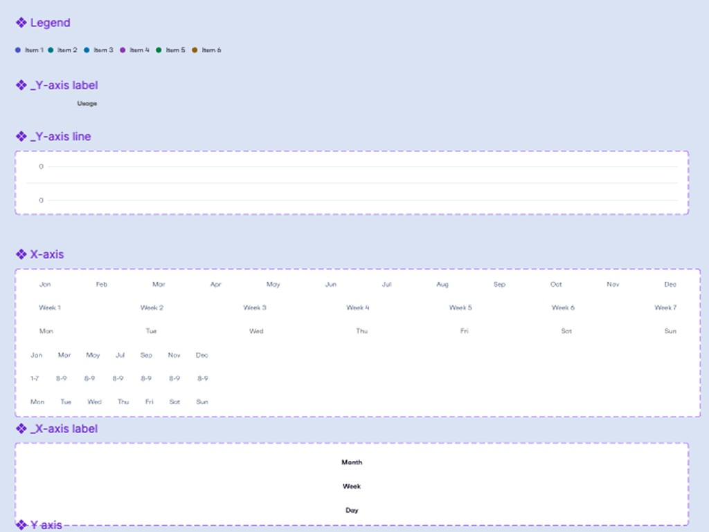
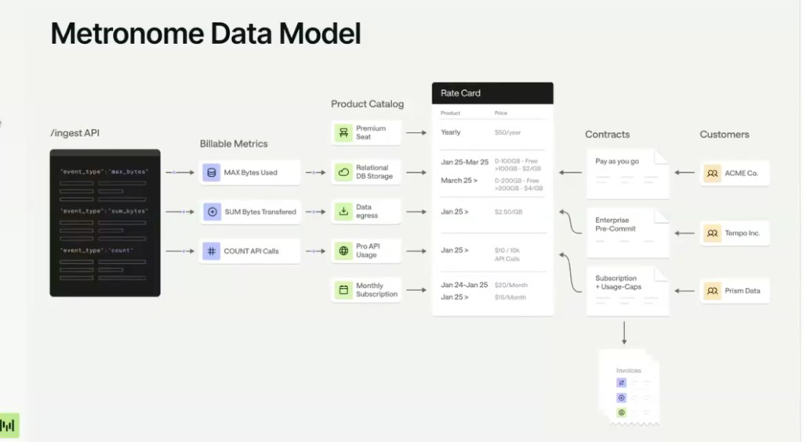

Global Web Index.
Jan 2026-present
GWI was evolving from a traditional SaaS business towards an AI-powered, API-first platform. As the product offering expanded, the systems supporting enterprise customers needed to evolve too.
I led cross-functional discovery into GWI’s enterprise administration platform, designed GWI’s first customer-facing API/MCP usage dashboard, and contributed to wider billing discovery that helped shape the foundational work needed to support future consumption-based billing.

Impact snapshot
The business was changing faster than the platform
GWI’s ambition was to grow Enterprise ARR to £50m within 24 months by expanding its AI product offering.
As the business evolved towards an AI-powered, API-first platform, its enterprise capabilities needed to evolve alongside it. Supporting this growth meant rethinking how enterprise customers managed their accounts, accessed products and interacted with the platform.
I joined to help modernise User Management. Before proposing solutions, I needed to understand how the existing platform worked, where it was falling short, and what would be needed to support the business’s next stage of growth.

Finding the problems behind the interface
I led cross-functional discovery across five teams, using stakeholder mapping, workshops and interviews to understand enterprise administration in practice, uncover manual processes, and map the dependencies between teams, systems and customer workflows.
Building a shared understanding before designing solutions

01 — Who is involved?
Stakeholder mapping to understand the teams involved in enterprise administration and their relationships.

02 — How does it work today?
Workshops and interviews to explore existing processes, hand-offs and operational pain points.

03 — Where are the opportunities?
Research synthesis to identify recurring themes, system dependencies and areas for improvement.
Research synthesis
Four problems holding back enterprise growth
-
01
No organisational hierarchy
2,600
Organisations associated with one enterprise client.
-
02
Manual administration
24%
Of Customer Success Intercom tickets related to seat-change requests.
-
03
Invisible API/MCP usage
80m
API calls in one day without customer usage visibility.
-
04
Access misaligned with contracts
£36m
Revenue associated with discrepancies between Salesforce sales records and admin-system provisioning.
Different audiences, different needs
Every decision had to balance enterprise customers, internal operational teams and the platform itself.
External
- Account administrators Self-serve control over users and access.
- API customers and developers Visibility into API/MCP usage.
Internal
- Customer Success and Product Experience Less manual administration.
- Account managers Better insight into customer usage.
- Engineering and Product Scalable platform governance.
Four opportunity areas
-
Build an enterprise operating model:
create an organisational structure that reflects how enterprise customers buy, manage and delegate access.
-
Enable self-service administration:
allow enterprise administrators to manage users without relying on Customer Success.
-
Make API/MCP usage visible:
give customers a way to understand and monitor their usage.
-
Align access with contracts:
connect customer access and permissions to the commercial relationships that govern them.
Modelling the system before designing the interface
I used object-oriented UX to map organisations, users, permissions and products, creating a shared understanding of the platform’s underlying complexity and the gaps that needed addressing beyond the interface.
The model informed a longer-term vision for enterprise administration, including clearer organisational relationships, delegated access and more scalable governance.

Concept, not a shipped product
From future state → Alpha
The roadmap pivot - we needed to deliver self-serve sooner
As priorities evolved, the focus shifted toward launching an Agentic Alpha product within ~two months,
Constraint
WorkOS migration limited enterprise hierarchy.
Decision for Alpha
Prioritise contained self-service.
- Self-serve for the new product
- Role-based access
- User access management
- API & MCP usage metering
Deferred, not dropped
Build later
- Full redesign
- Organisational hierarchy
- Teams
- Bundle roll-up
Before designing the interface, we agreed the rules.
Permission matrix
| Capability | Admin | Member | Internal |
|---|---|---|---|
| Invite users | Allowed | Not applicable | Allowed |
| Remove users | Allowed | Not applicable | Allowed |
| Change roles | Allowed | Not applicable | Allowed |
| Assign admin | Allowed | Not applicable | Allowed |
| Remove self | Not allowed | Not applicable | Allowed |
| Change own role | Not allowed | Not applicable | Allowed |
-
01
Protect organisations
Always retain an administrator.
-
02
Prevent lockout
No self-removal or self-role changes.
-
03
Support operations
Separate internal permissions for GWI support teams.
-
04
Separate admin from paid seats
Administrator accounts remain unbound from paid seats.
Co-created with Product · Engineering · Design
Design
The Alpha experience focused on enabling core self-serve workflows while maintaining appropriate governance and ownership.
Invite users flow · currently in development.
Design iterations
Making role changes explicit
The original role-management design did not make role changes sufficiently clear. The revision made those changes more explicit and legible.


Making removal consequences clear
The original user-removal design did not make the consequences of removing a user clear. The revision made those consequences clearer.


Giving enterprise customers visibility into API/MCP usage
As GWI expanded its API and MCP offering, customer-facing usage visibility became an important part of the wider platform experience. The usage dashboard needed to give customers clearer information without making them interpret unreliable or confusing data.
I designed GWI’s first customer-facing API/MCP usage dashboard around the questions customers needed to answer.
What customers needed to understand
- Are we approaching our limits?
- What caused a spike in usage?
- How is our usage trending?
- Who is consuming our shared allocation?
Turning customer questions into trustworthy reporting
Three design decisions shaped the reporting experience.

01
Separate API from MCP
The design separates API and MCP usage so customers can understand distinct consumption patterns.
02
Show meaningful usage
The reporting prioritises meaningful usage information rather than simply showing requested data.
03
Flexibility without a filter wall
The design provides flexibility without overwhelming customers with a wall of filters.
Bridging design and implementation
A further challenge was finding a charting pattern that worked across Figma and React.
I worked through the product use case, component design and implementation requirements to agree the chart behaviour, states and flexibility. This helped connect the design intent to a pattern that could be implemented consistently.


The dashboard has been technically delivered but is undergoing usage-data QA before customer release. Customer adoption and commercial impact have not yet been established.
Connecting usage to the commercial model
The ambition: monetise API/MCP consumption.
Supporting consumption-based billing meant connecting usage data to products, organisations and commercial agreements across the platform.
Brought together Salesforce, Customer Success and Analytics to map dependencies and identify foundational gaps.
- Salesforce
- Customer Success
- Analytics
Foundational work underway Foundational work on Salesforce mapping and organisational hierarchy is now underway.

What’s next
Defining how we’ll measure
success
Success measures and instrumentation were defined with Analytics and Engineering during build. On rollout, we’ll use these to evaluate whether the new experiences deliver business, product and customer value.
01 - Self-serve
Reduce reliance on Customer Success for routine administration
Business
Fewer relevant support requests through Intercom
Product
Self-service adoptionKey admin tasks completed self-serve
Experience
Task successDrop-off and errors
02 - API & MCP
Give customers trustworthy visibility into their usage
Business
Fewer manual reporting requests through Intercom
Product
Usage dashboard adoptionReporting interactions
Experience
Usability of the key reporting tasksCan customers answer their core usage questions?
Measurement approach defined with Analytics; usability testing and product instrumentation would validate the experience once live.
Outcomes and impact
Delivered
Designed and built GWI’s first customer-facing API/MCP usage dashboard, now undergoing data QA before customer release.
Discovered
Identified £36m in revenue misalignment and around 500 hours of manual administration and support over six months.
Influenced
Helped shape priorities around organisational hierarchy, Salesforce mapping and the foundations for consumption-based billing.
Next steps
Foundational platform work for API billing and consumption is underway. Dashboard customer roll-out is planned.
Reflection: Connecting systems, teams and priorities
My takeawayEnterprise problems rarely sit within one team or system. I flagged the organisational hierarchy issue early, but it took the API/MCP work for its wider impact to gain traction. I learned that solving these challenges means connecting the dots across systems, building shared understanding and helping the business prioritise the foundations needed for long-term growth.